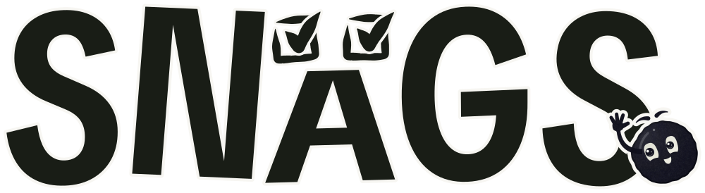
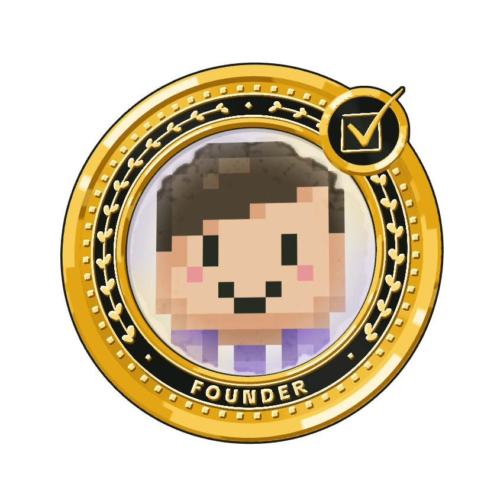
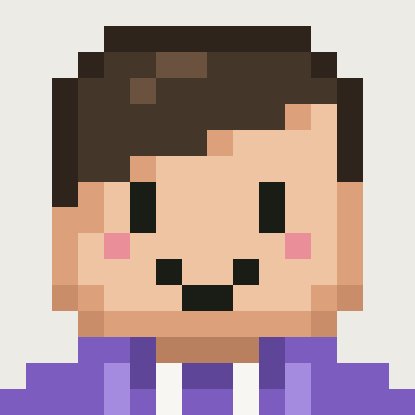
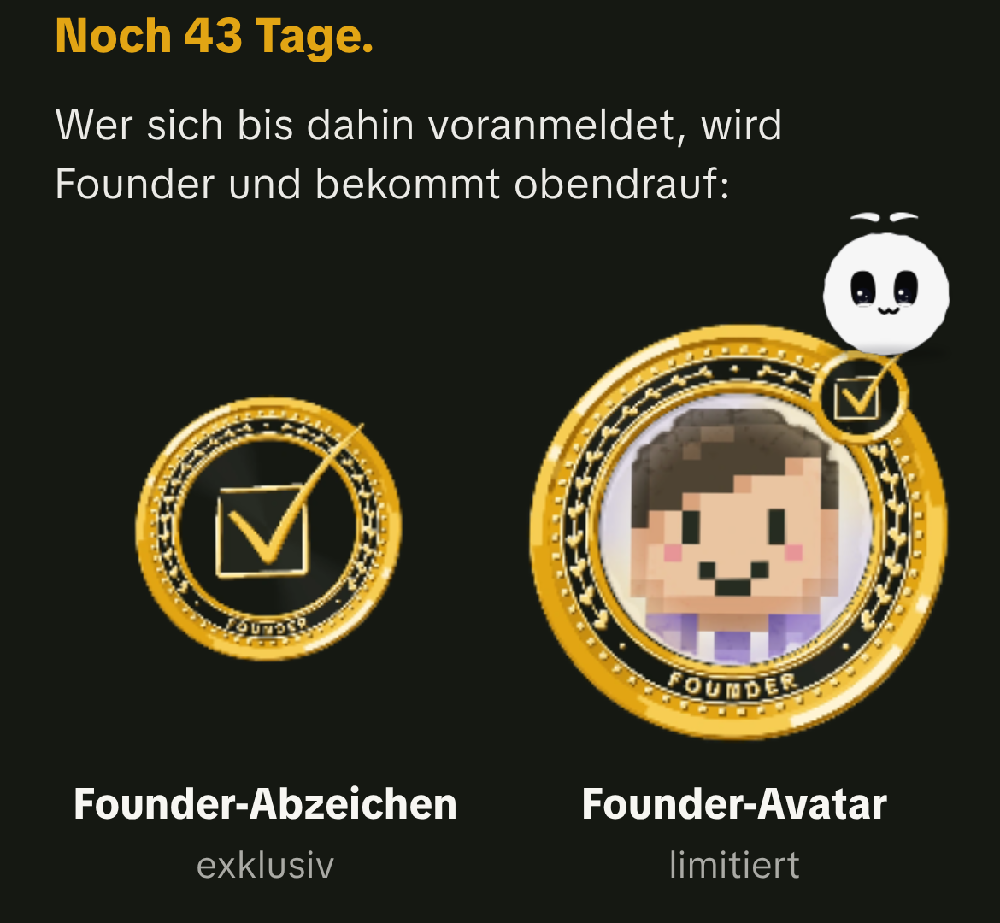
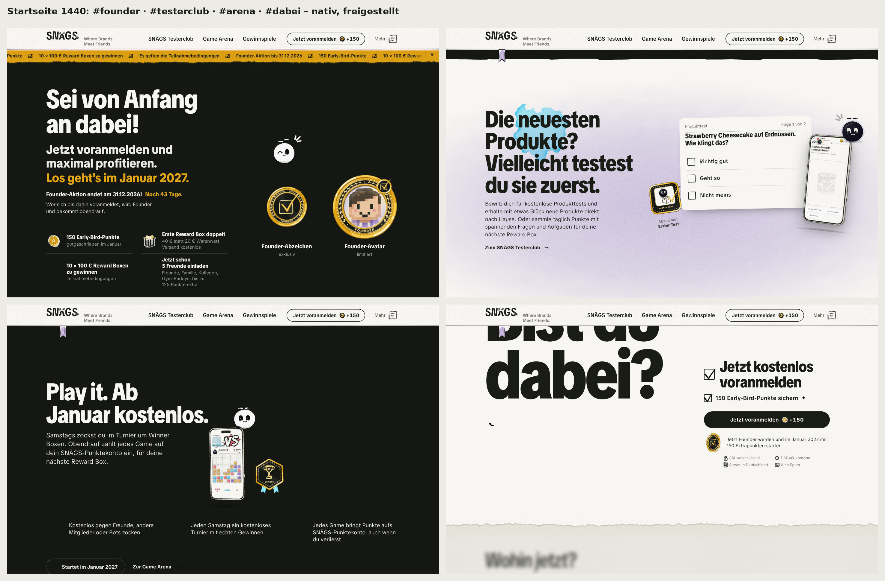
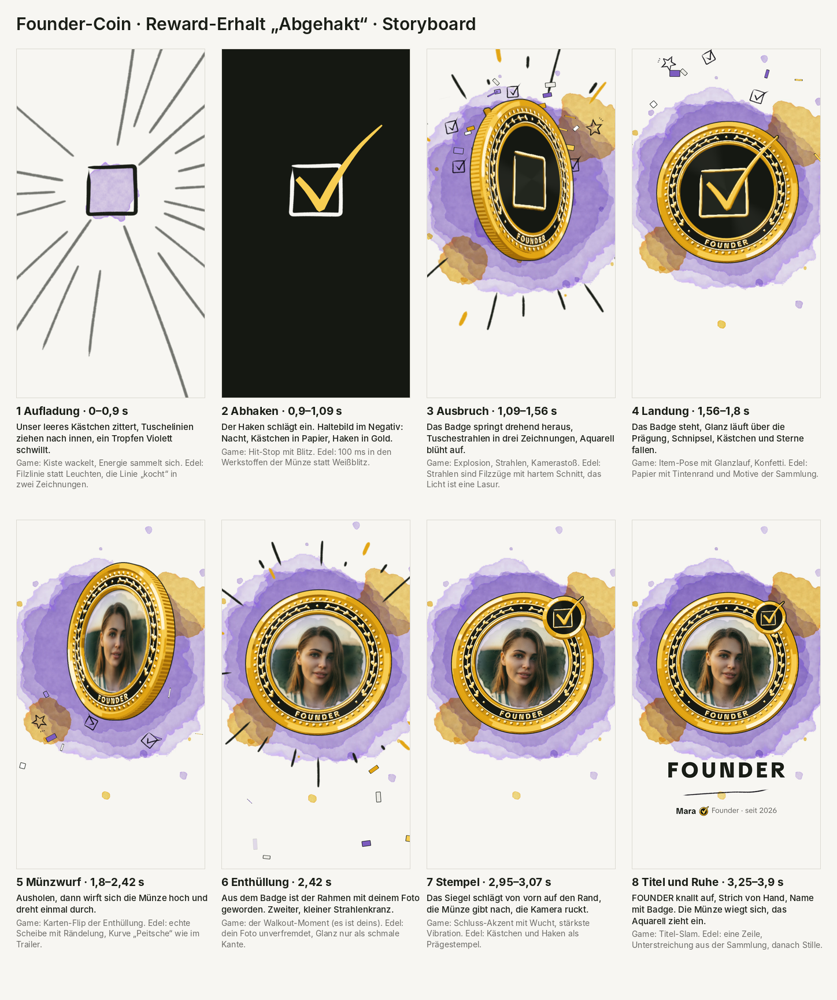
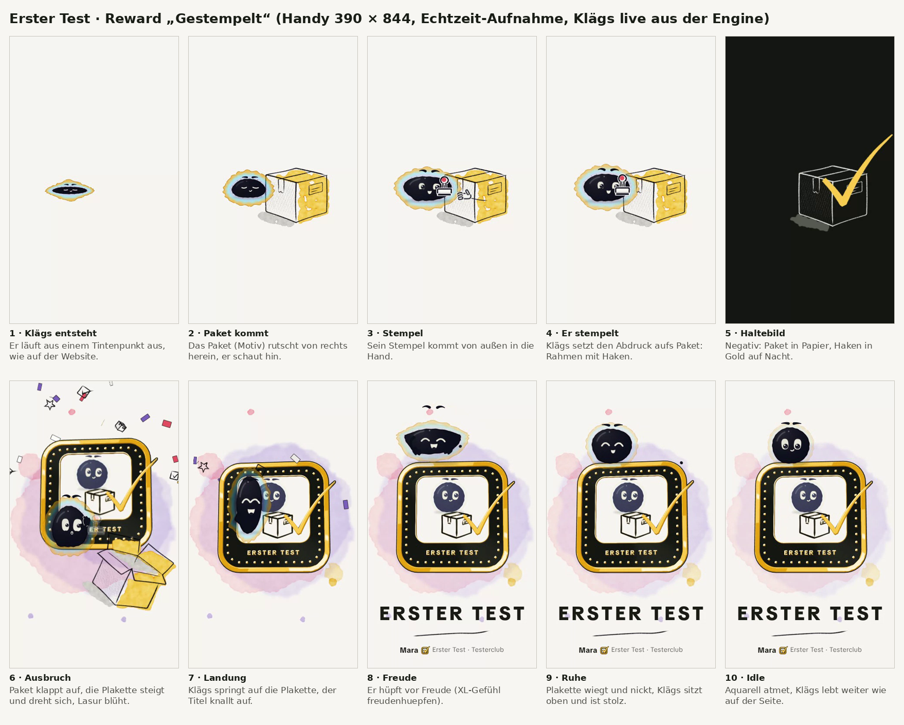
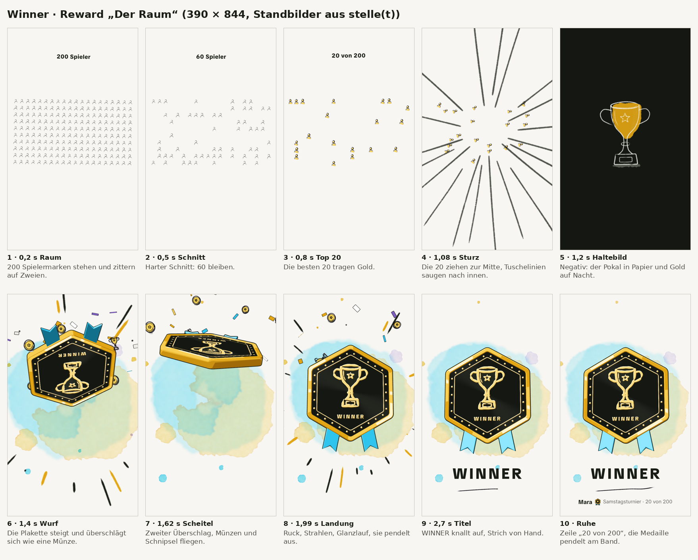
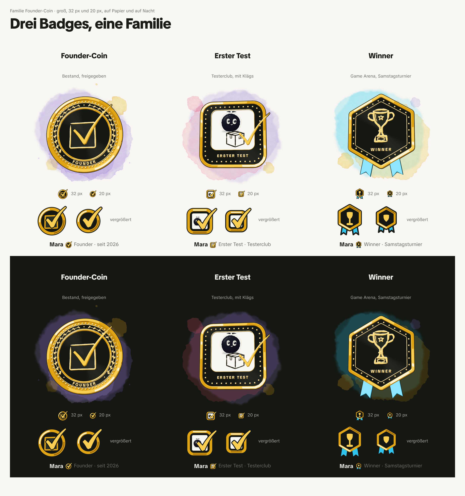

Entwürfe, Stand 19. November 2026. Drei Badges einer Familie: der Founder-Coin für alle, die sich bis 31.12.2026 voranmelden, „Erster Test“ im Testerclub und „Winner“ für das Samstagsturnier der Game Arena. Die Animationen laufen hier live im Browser; Videos und freigestellte Bilder lassen sich laden.
Zuerst erscheint der Rahmen mit dem Avatar, danach die Founder-Badge. Beide sind freigestellt und bewegen sich ohne WebGL, auch am Handy. Antippen des Rahmens spielt den Auftritt noch einmal.
Live: Startseite, Abschnitt „Sei von Anfang an dabei!“




Der Moment, in dem man Founder wird: Ein leeres Kästchen wird abgehakt, die Münze springt heraus, dreht sich und zeigt das eigene Profilfoto im Founder-Rahmen. Danach wiegt sich die Münze ruhig im Idle. Die Fotos im Video sind Testfotos (Unsplash).
Live: Reward Idle Rahmen und Badge mit eigenem Foto alle Größen

Für den ersten Produkttest: eine Plakette in der Form unseres Kästchens, darin das Paket mit Klägs. Im Reward „Gestempelt“ setzt Klägs den Haken selbst: Er stempelt das Paket, die Plakette steigt heraus, und er springt darauf.

Für die Gewinner des Samstagsturniers, die besten 20 von 200: ein Sechseck mit Pokal und zwei Bandenden. Im Reward „Der Raum“ bleiben von 200 Spielern erst 60, dann 20; danach steigt die Plakette wie eine hochgeworfene Münze.

Alle drei Badges groß und in den kleinen Größen 32 und 20 px, auf Papier und auf Nacht.
Live: Familie
